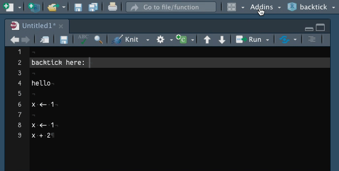

{kind=link}
bt_backtick <- function() {
rstudioapi::insertText("`")
}
tl;dr
I wrote a tiny R package called {backtick}, which contains an RStudio Addin with a handful of functions for inserting backticks into your R scripts and R Markdown documents (yes, really).
Plus one
RStudio Addins let you select an R function from a dropdown menu in the RStudio IDE. They’re often functions that you don’t need in your executed script, but can make your life easier by performing some kind of supportive action.
For example, you can use the RStudio Addin in the {remedy} package from ThinkR to add Markdown formatting to your text. RStudio’s {reprex} package has a built-in RStudio Addin to create a reproducible example from highlighted code. Or how about Miles McBain’s {datapasta} Addin for pasting conveniently into R scripts from external sources?
You can find many more examples in Dean Attali’s {addinslist} package, which itself contains an Addin for… adding more Addins.
In addition
I’ve written about RStudio Addins before.
I have a GitHub-hosted package called {blogsnip} with an Addin to help me insert code into these blogposts.1 For example, to insert the session-information block at the end of each post, or to insert HTML to create more accessible images.
{blogsnip} also hosts a concept function to add a comment to each closing bracket with the name of the function being closed. I’ve found it useful for keeping on top of deeply-nested Shiny apps.
A while back I also wrote an Addin for the {r2eng} package to let your computer speak R code aloud as an English sentence.
I also recently created the {snorkel} R package, which contains an Addin to help you insert {roxygen2} formatting to your function documentation. Turns out Jozef wrote a detailed series about how you can do something similar.

I wanted to write something about how to quickly set up a package to insert or replace text, which I think is probably the most common (simple) use of RStudio Addins.
Eventually I was nerdsniped (unintentionally) on Twitter by Calum to do something about it.
The problem
Problem: Calum’s backtick key, `, is being used to activate additional software that’s awkward to toggle on and off every time they wanted to use the backtick for R coding.2
To solve Calum’s problem (and Italy’s?3), you could try to use a custom keyboard shortcut, or maybe a snippet. And RStudio already has a button and shortcut in its IDE for inserting R Markdown code chunks, which require triple backticks to demarcate the start and end of the chunk.
But an RStudio Addin is another viable method that means you can bundle up a set of functions that insert each of the backtick ‘constructions’, from a single backtick to an R Markdown chunk.
As a bonus, you can also set the functions of an Addin to custom keyboard shortcuts and quickly access them from the RStudio command palette (just hit Shift + Cmd + P, or Shift + Ctrl + P, then type the word ‘backtick’).
A solution
So, the (very specific!) user need was clear and I created the {backtick} package with functions to:
- insert a single backtick (i.e.
`) - surround selected text with single backticks (i.e.
selectionbecomes`selection`) - surround selected text with backticks for execution as inline R code in an R Markdown document (as above, but inserts an
rand space after the first backtick) - surround selected text with backticks for execution as an R code chunk in an R Markdown document (
selectionis surrounded by```{r}above and```below)
That last one is especially neat because the in-built RStudio function doesn’t appear to put selected text inside an R Markdown chunk; it simply inserts the skeleton of a chunk.
Calum notes that this solution worked, and that they were able to set the insert backtick Addin to the keyboard shortcut Alt + `, lol.
Add your own
I wanted to record for posterity how you (and me) can create this sort of thing.
- First, create a new package—I like to use
usethis::create_package()—and complete basic things like the DESCRIPTION file (I wrote about this before) - Write functions in an R script—I like to use
usethis::use_r()to create this script in the package—that insert code or replace selected text using the {rstudioapi} package) - Add an
inst/rstudio/addins.dcffile4 that declares each of your Addins
Points 2 and 3 are in scope for this quick post.
Use {rstudioapi}
What do I mean by ‘write functions that insert or replace’ text?
Well, insertion is straightforward. Here’s the function definition from {backtick} to insert a single backtick:
In other words, it’s as simple as a function that contains rstudioapi::insertText(). This fetches information from the IDE to know where the cursor is placed in your script, which is where a supplied text string (a single backtick in this case) will be inserted.
And what about text replacement? A similar story: the {rstudioapi} package is used to detect the selected text, which can then be pasted together with other strings to produce and insert a new compound string. Here’s an example from {backtick} for surrounding selected text with backticks:
bt_backticks <- function() {
active_doc <- rstudioapi::getSourceEditorContext()
if (!is.null(active_doc)) {
selected_text <- active_doc$selection[[1]]$text
text_replace <- paste0("`", selected_text, "`")
rstudioapi::modifyRange(
active_doc$selection[[1]]$range,
text_replace
)
}
}So, in short, rstudioapi::getSourceEditorContext() fetches information about the script pane, including the current selection. That selection can be pasted with other strings, such as a backtick character at the start and end, and then inserted back into the script pane with rstudioapi::modifyRange() to replace the original selection.
And, well… that’s it for functions. All you need to do now is create a special text file so that the functions can be interpreted as Addins.
Create a dcf
So, for example, the bt_bactick() function can be exposed as an Addin function by adding the following to the inst/rstudio/addins.dcf file:
Name: Insert Backtick
Description: Insert a single backtick. In R Markdown file, one backtick will be
inserted. RStudio automatically adds a second backtick when this function is
used in an R script.
Binding: bt_backtick
Interactive: falseThis is pretty straightforward: you provide a name (which will be the name you see in the RStudio Addins dropdown menu) and a description (I just copied the description I wrote for the function documentation), along with the binding (just the function name). There’s also ‘interactive’, which tells RStudio if it needs to wait for the user to do something (no, or false in our example).
Addintional resources
This was a quick roundup to help you (and me) remember quickly how to create this kind of simple insert/replace type of RStudio Addin.
I recommend you check out a number of more in-depth resources:
- Sharon’s excellent video ‘Write your own RStudio addins’
- Jozef’s in-depth blog series
- RStudio’s very own introduction
Let me know about other useful Addins or tutorials for making them.
And perhaps begin lobbying the Italian government to a backtick key on their keyboards as a gesture of solidarity with developers.
Environment
Session info
Last rendered: 2023-07-18 21:08:17 BSTR version 4.3.1 (2023-06-16)
Platform: aarch64-apple-darwin20 (64-bit)
Running under: macOS Ventura 13.2.1
Matrix products: default
BLAS: /Library/Frameworks/R.framework/Versions/4.3-arm64/Resources/lib/libRblas.0.dylib
LAPACK: /Library/Frameworks/R.framework/Versions/4.3-arm64/Resources/lib/libRlapack.dylib; LAPACK version 3.11.0
locale:
[1] en_US.UTF-8/en_US.UTF-8/en_US.UTF-8/C/en_US.UTF-8/en_US.UTF-8
time zone: Europe/London
tzcode source: internal
attached base packages:
[1] stats graphics grDevices utils datasets methods base
loaded via a namespace (and not attached):
[1] htmlwidgets_1.6.2 compiler_4.3.1 fastmap_1.1.1 cli_3.6.1
[5] tools_4.3.1 htmltools_0.5.5 rstudioapi_0.15.0 yaml_2.3.7
[9] rmarkdown_2.23 knitr_1.43.1 jsonlite_1.8.7 xfun_0.39
[13] digest_0.6.33 rlang_1.1.1 evaluate_0.21 Reuse
CC BY-NC-SA 4.0